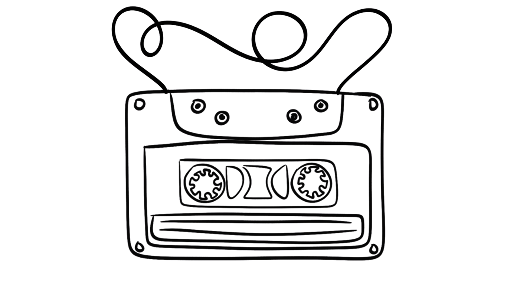

Home
Books
Albums
Movies

Music
Fun
- Aim & Ignite (2009)
Andre 3000
- New Blue Sun (2023)
Steely Dan
- Can't Buy A Thrill (1972)
Bloc Party
- A Weekend In The City (2007)
Hot Chip
- The Warning (2006)
Depeche Mode
- Delta Machine (2013)
Alice In Chains
- Dirt (1992)
Seether
- Isolate + Medicate (2014)
Finger Eleven
- Them vs. You vs. Me (2007)
Van Morrison
- Moondance (1970)
Live
- V (2001)
The Misfits
- Famous Monsters (1999)
IDLES
- TANGK (2024)
Talking Heads
- 177 (1977)
Pond
- The Weather (2017)
Keane
- Under The Iron Sea (2006)
Janes Addiction
- Strays (2003)
Kasabian
- West Ryder Pauper Lunatic Asylum (2009)
Fine Young Cannibals
- The Raw & The Cooked (1988)
Billy Talent
- Billy Talent ||| (2009)
Breaking Benjamin
- Phobia (2006)
Something For Kate
- Echolalia (2001)
Rick Ross
- Teflon Don (2010)
Bread
- On The Waters (1970)
Skillet
- Awake (2009)
L7
- Bricks Are Heavy (1992)
Modest Mouse
- Good News For People Who Love Bad News (2004)
The Superjesus
- Jet Age (2000)
Craig David
- Trust Me (2007)
Guacayo
- Yuniverse (2019)
Motionless In White
- Disguise (2019)
Five For Fighting
- America Town (2000)
Blue King Brown
- Born Free (2014)
Shinedown
- The Sound of Madness (2008)
Pearl Jam
- No Code (1996)
The Flaming Lips
- Transmissions from the Satellite Heart (1993)
Corey Hart
- First Offense (1983)
Santigold
- I Don't Want: The Gold Fire Sessions (2018)
Darwin Deez
- Double Down (2015)
A Day To Remember
- What separates me from you (2010)
Fontaines D.C.
- Romance (2024)
Marcy Playground
- Marcy Playground (1997)
Pierce the Veil
- Collide with the sky (2012)
Prophets of Rage
- Prophets of Rage (2017)
Bad Neighbour
- Millions (2024)
The Outfield
- Play Deep (1985)
Moby
- I Like to Score (1997)
Bare Naked Ladies
- Maybe you should drive (1994)
Panic! At The Disco
- Vices and Virtues (2011)
Suicidal Tendencies
- Freedumb (1999)
The White Stripes
- Get Behind Me Satan (2005)
Boy & Bear
- Harlequin Dream (2013)
Judas Priest
- Sin after Sin (1977)
The Black Keys
- Dropout Boogie (2022)
Snoop Dog and Dr Dre
- Missionary (2024)
Hinder
- Extreme Behaviour (2005)
Lady Gaga
- Chromatica (2020)
Rain City Drive
- To better days (2020)
Joy Division
- Unknown Pleasures (1979)
Pierce Brothers
- My Tired Mind (2017)
Lynyrd Skynrd
- Pronounced 'Lĕh-'nérd 'Skin-'nérd (1973)
DANGERDOOM
- THE MOUSE AND THE MASK (2005)
London Grammar
- Californian Soil (2021)
3 Doors Down
- Away from the sun (2002)
Sade
- Diamon Life (1984)
Crooked Colours
- Tomorrows (2022)
Blue Öyster Cult
- Agents of Fortune (1976)
Crash Test Dummies
- God Shuffled His Feet (1993)
Architects
- The Sky, The Earth and All Between (2025)
Sneaky Sound System
- 2 (2008)
The Jesus Lizard
- Rack (2024)
Hazel English
- Real Life (2024)
The Red Jumpsuit Apparatus
- Don't you fake it (2006)
Mudvayne
- Mudvayne (2009)
Palace
- Life After (2019)
Hollywood Undead
- Notes from the Underground (2012)
Incubus
- Make Yourself (1999)
The Wombats
- Oh! The Ocean (2025)
Three Days Grace
- Human (2015)
The Butterfly Effect
- Imago (2006)
Placebo
- Meds (2006)
Living Colour
- Vivid (2023 Remaster) (1988)
Black Sabbath
- Volume 4 (1972)
Love Fame Tragedy
- Wherever I Go I Want To Leave (2020)
Laura Branigan
- Self Control (1984)
Neil Young & Crazy Horse
- Rust Never Sleeps (1979)
Underoath
- They're only chasing safety (2004)
Bryan Adams
- Into the fire (1987)
Timberland
- Shock Value (2007)
Muse
- Drones (2015)
Volbeat
- Guitar gangsters & cadillac blood (2008)
M.I.A
- Kala (2007)
Cloud Control
- Zone (2017)
Tom Petty
- Full Moon Fever (1989)
She Wants Revenge
- Valleyheart (2011)
Royel Otis
- Hickey (2025)
The Babys
- Head First (1978)
Switchfoot
- Learning to breathe (2000)
Little Dragon
- Season High (2017)
Aerosmith
- Just Push Play (2001)
Quarashi
- Jinx (2002)
Groove Armada
- Black Light (2010)
Papa Roach
- Ego Trip (2022)
Dimmu Borgir
- In Sorte Diaboli (2007)
Boston
- Walk On (1994)
Rammstein
- Reise Reise (2004)
Stone Temple Pilots
- Purple (1994)
Shiny Toy Guns
- Season of Poison (2017)
Quiet Riot
- Metal Health (1983)
Wheatus
- Wheatus (2000)
Blossoms
- Blossoms (2016)
Akon
- Konvicted (2006)
Soulfly
- Omen (2010)
Fidlar
- Almost Free (2019)
Puddle of Mudd
- Famous (2007)
Ann Peebles
- I can't Stand The Rain (1974)
The Calling
- Camino Palmero (2000)
Skyhooks
- Living In The 70's 1974 (2009 Remaster)
The Cruel Sea
- Over Easy (1998)
Death By Denim
- Sleepless and Sunkissed (2020)
Candi Staton
- Young Hearts Run Free (1976)
Kiss
- Dynasty (1979)
Evanescence
- Evanescence (2011)
Spiritbox
- Eternal Blue (2021)
The Dandy Warhols
- Welcome to the Monkey House (2003)